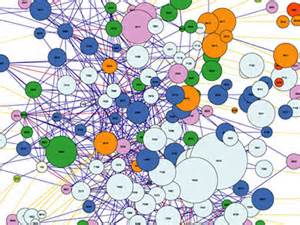

Issues in the Tech World: Embracing Complexity
1936
In 1936, the first freely programmable computer is brought into existence. This machine is amazing. It allows us to perform computations faster than ever before. However, it has limited capabilities. With these limited capabilities and the lack of connection to other computers worldwide, there are a limited number of avenues for it to wonder down; a limited number of fields, woods, and glens in which it can get lost.
And people seeing how wonderful this first devise is, continue working to improve and expand its abilities. The Internet is born and computers eventually are connected all over the world to each other. Now these creations can wonder around and bump into things, they can even create their own fields and forests. This would bring into existence a mountain of complexity to navigate and organize.
During this same time the computer is growing in its significance in the business world. It is utilized by business after business to run internal affairs as well as business-to-business transactions. They are put to use to increase the availability of services to clients and customers.
The Dilemma: The Proliferation of Third Party Programs
Well, it is quite a while since 1936 and computers have become an integral part of our society. We not only watch movies, talk to loved ones, order mercandise, but almost all businesses rely on the role of computer services in their day to day operations.
This omnipresence, has lead to the desire, motivation, and opportunity for so many programmers to produce applications and services. They are popping up all over the place. These "third-party" service do an great deal of wonderful things and show the computer for what an amazing teasure chest it truly is.
So, What's the Problem you Ask?
Creativity runs best without fences or guidelines. Machines run best with markers, tabs, and guiderails.
Computers, Programs, User Interfaces, and Widgets are roughly machines.
The challenge is managing all of this beautiful complexity - keeping it all run well. Thinking of clever ways to weave them together and actually increase creativity and productivity.
An Opportunity - The 4th Party
This is a growing opportunity for the people interested in integrating these various aspects and channel the complexity to produce a greater experience for the user and directly increaese creativity and productivity. To create "4th Party" Platforms that blend and mix and tie all these services together is a growing field.